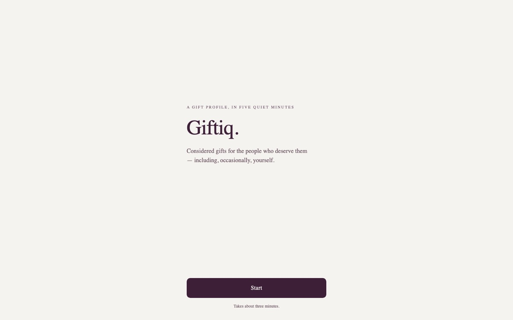

Hi, my name is
Sam Bavafa.
I build ad products people actually use.
I'm a product manager who helps advertisers understand how their campaigns really perform, and reach the right people with less guesswork. Right now I'm leading measurement products at Loblaw Advance.
01About me
Hi, I'm Sam. I build products that help advertisers understand how their campaigns really perform, and use new technology to reach their audiences better, faster, and cheaper.
I've had the chance to do this at very different scales: the retail media network of Canada's largest retailer, a programmatic ad platform serving tens of thousands of advertisers, a consumer research startup, and a retail startup I co-founded and grew to a national team. At each of them, great colleagues taught me something different about making decisions, moving fast, and building consensus.
What I enjoy most is turning messy data and complex technology into something simple that people use without thinking about it, often by building a rough version first to see if an idea holds up.
Outside of work, I build small side projects (a few are below), tinker with AI tools to make music and images, and travel whenever I can.
Here are a few things I've been working with recently:
- Measurement and attribution
- Recommender systems
- LLM copilots and agents
- Audience segmentation
- SQL and BigQuery
- Python and rapid prototyping

02Where I've worked
Senior Product Manager @ Loblaw Advance
Apr 2025 — Present · Toronto
- Lead the LOOP measurement experience, the reporting home for advertisers across on-site, in-store, and off-site media
- Started a new email ads channel from scratch and grew it into a real revenue line across the company's loyalty and retail brands
- Prototyped and shipped an internal tool that lets AdOps check email ads before they go live, without test sends
- Owned the MediaAisle DSP and led the build-vs-buy review that set its future direction
- Co-designed AI audience tools, including the guardrails for building audiences through conversation
Product Consultant @ Data Crux Solutions
Jan 2024 — Mar 2025 · Vancouver
- Product and analytics consulting for retail and consumer app clients
- Designed and built an AI affiliate marketing tool that finds products and personalizes recommendations from shopper data
- Used SQL to spot an unexpected user segment in a health app and led the pivot that followed
Product Manager @ Rival Technologies
Nov 2022 — Sep 2023 · Vancouver
- Owned the roadmap for an AI research tool on a mobile-first consumer research platform
- Led an AI copilot for survey analysis from idea to market with engineering, design, sales, and operations
- Built smarter distribution and user profiling tools to reach the right respondents without over-messaging them
Product Data Analyst @ Kixeye
Jun 2022 — Sep 2022 · Victoria
- Built live dashboards on how players engaged with the studio's flagship mobile game, shaping pricing and promotions
- Compared acquisition cost with player lifetime value to find which campaigns actually paid back
Senior AI Product Manager @ Yektanet
Feb 2019 — Aug 2021 · Tehran
- Led two agile teams of data scientists and developers building ML-driven ad products on a DSP/SSP platform
- Launched real-time content matching that serves the most relevant creative for each page
- Built a real-time segmentation engine that turned behavioural and contextual signals into shared audiences
- Shipped a content recommender, tuned through A/B tests and user interviews
Co-founder and Product Manager @ Rochi
Dec 2016 — Feb 2019 · Tehran
- Co-founded an online retail startup for garment producers and led its product end to end
- Launched several product lines and a consumer mobile app, and grew the business to a national team
- Used shopping behaviour data to design cross-sell and bundle offers
03Some things I've built

Side project · built end to end
Insider
- Next.js
- TypeScript
- Vercel
- GitHub Actions

Side project · built end to end
Giftiq
- Expo
- Next.js
- Supabase
- LLM
- Etsy API

Side project · in design
Boxer
- Python
- Forecasting
- PRD
- Wireframes
Other noteworthy projects
Email ads QA tool
An internal web app at Loblaw Advance that shows exactly how an email ad will look live, so AdOps can check it without test sends.
- Replit
- Email ads
Smart pricing for NYC listings
A model that suggests a competitive nightly price for a listing based on location and season.
- Python
- Regression
- EDA
What drives a good review
NLP on hotel reviews to find what makes guests happy or unhappy, compared across hotel classes.
- NLP
- Sentiment
- Python
Similar movies
Finds how alike two movies are from their plot summaries, the same idea behind contextual ad matching.
- NLP
- Clustering
Predicting music taste
Classifiers that predict whether a listener will like a song from its audio features.
- Decision trees
- k-NN
Cashtag pipeline
A data pipeline that measures how often stock cashtags show up in tweets.
- Python
- Social data
04. What's next?
Get in touch
I'm always happy to talk about ad tech, measurement, or AI products. Whether you have a role in mind, a question, or just want to say hi, my inbox is open.
Say hello